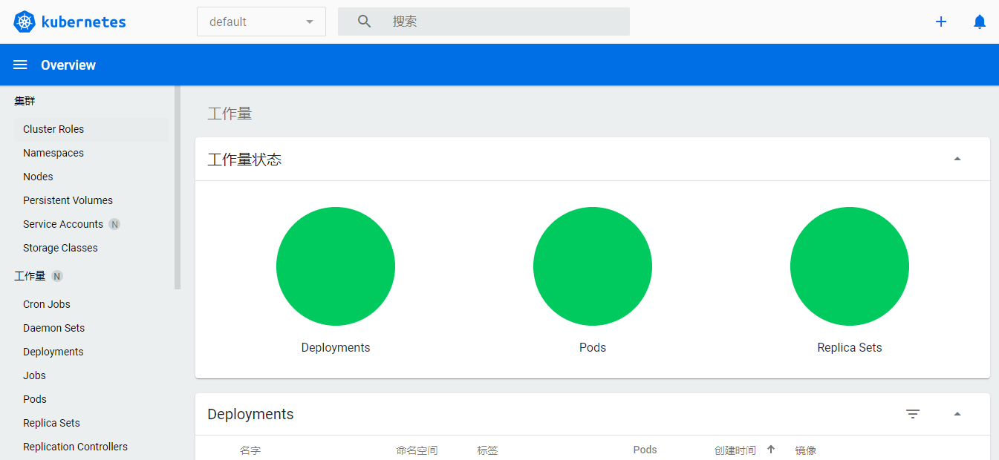

- 作者 :Xcbeyond
- 发表于 :2020-11-07 20:23:01
- 分类 : Kubernetes
一切先从安装开始！
学习一门新的技术，一般先从安装开始，实实在在的安装完，使用它，逐步深入了解。
为了方便大家开发、学习和体验 Kubernetes，Kubernetes 社区提供了可以在本地部署的 minikube，通过 minikube 方式可以在本地运行 Kubernetes。
（Kubernetes 的部署方式还有很多，本文是基于本地开发环境的部署方式，学习它足够了。想要部署一套符合生产环境的集群不是一件容易的事，随后其他篇章将会涉及。）
1、Minikube
Minikube 是一个可以在本地轻松运行 Kubernetes 的工具。Minikube 会在您的电脑中的虚拟机上运行一个单节点的 Kubernetes 集群，以便用户对Kubernetes 进行使用或者在之上进行 Kubernetes 的日常开发。
特征：
minikube 运行 Kubernetes 的最新稳定版本，并支持标准的 Kubernetes 功能，例如：
- 负载均衡： 使用
minikube tunnel - 多集群： 使用
minikube start -p <name> - NodePorts： 使用
minikube service - 持久卷
- Ingress
- Dashboard： 仪表盘，使用
minikube dashboard启动。
2、安装
可以在本地虚拟机环境下安装。
由于网络访问原因，很多朋友无法直接使用 minikube 进行安装。在最新的 Minikube 中，已经提供了配置化的方式，可以帮助大家利用阿里云的镜像地址来获取所需 Docker 镜像和配置。
2.1 安装 kubectl
kubectl 是一个用于管理 Kubernetes 的命令行工具，可以检查集群资源、创建、删除和更新组件，查看你的新集群，并启动实例应用程序。
(1) 使用国内阿里云源安装
[xcbeyond@localhost ~]$ curl -LO http://kubernetes.oss-cn-hangzhou.aliyuncs.com/kubernetes-release/release/`curl -s http://kubernetes.oss-cn-hangzhou.aliyuncs.com/kubernetes-release/release/stable.txt`/bin/linux/amd64/kubectl && chmod +x kubectl && sudo mv kubectl /usr/local/bin/kubectl
(2) 查看版本
安装完，执行命令 kubectl version 查看版本，确认是否安装成功。
[xcbeyond@localhost ~]$ kubectl version
Client Version: version.Info{Major:"1", Minor:"19", GitVersion:"v1.19.2", GitCommit:"f5743093fd1c663cb0cbc89748f730662345d44d", GitTreeState:"clean", BuildDate:"2020-09-16T13:41:02Z", GoVersion:"go1.15", Compiler:"gc", Platform:"linux/amd64"}
Server Version: version.Info{Major:"1", Minor:"19", GitVersion:"v1.19.0", GitCommit:"e19964183377d0ec2052d1f1fa930c4d7575bd50", GitTreeState:"clean", BuildDate:"2020-08-26T14:23:04Z", GoVersion:"go1.15", Compiler:"gc", Platform:"linux/amd64"}
2.2 安装 minikube
minikube 是一个本地 Kubernetes 集群的实现，minikube 的主要目标是，成为本地开发 Kubernetes 和支持 Kubernetes 全部特性的最佳工具。用于在你电脑中的虚拟机上运行一个单节点的 Kubernetes 集群。
(1) 使用国内阿里云源安装
[xcbeyond@localhost ~]$ curl -Lo minikube https://kubernetes.oss-cn-hangzhou.aliyuncs.com/minikube/releases/v1.13.0/minikube-linux-amd64 && chmod +x minikube && sudo mv minikube /usr/local/bin/
(2) 安装启动
可以运行命令 minikube start 来启动本地 Kubernetes 集群。
为了访问海外的资源，阿里云提供了一系列基础设施，请按照如下参数进行配置。其中常见参数:
–driver=***： 从 1.5.0 版本开始，Minikube 缺省使用本地最好的驱动来创建 Kubernetes 本地环境，测试过的版本 docker，kvm
–image-mirror-country cn： 将缺省利用
registry.cn-hangzhou.aliyuncs.com/google_containers作为安装 Kubernetes 的容器镜像仓库 （阿里云版本可选）–iso-url=***： 利用阿里云的镜像地址下载相应的 .iso 文件（阿里云版本可选）
–registry-mirror=***： 为了拉取 Docker Hub 镜像，需要为 Docker daemon 配置镜像加速，参考阿里云镜像服务
–cpus=2：为 minikube 虚拟机分配 CPU 核数
–memory=2048mb：为 minikube 虚拟机分配内存数
–kubernetes-version=***：minikube 虚拟机将使用的 kubernetes 版本
启动 minikube：
首次启动需要下载镜像，需要耐心等待…
如果中途失败，可再次执行命令。
[xcbeyond@localhost ~]$ minikube start --driver=docker
* Centos 7.8.2003 上的 minikube v1.13.0
* 根据现有的配置文件使用 docker 驱动程序
* Starting control plane node minikube in cluster minikube
* Pulling base image ...
* Creating docker container (CPUs=2, Memory=2200MB) ...
* 正在 Docker 19.03.8 中准备 Kubernetes v1.19.0…
> kubectl.sha256: 65 B / 65 B [--------------------------] 100.00% ? p/s 0s
> kubelet.sha256: 65 B / 65 B [--------------------------] 100.00% ? p/s 0s
> kubeadm.sha256: 65 B / 65 B [--------------------------] 100.00% ? p/s 0s
> kubectl: 41.01 MiB / 41.01 MiB [-----------] 100.00% 496.18 KiB p/s 1m24s
> kubeadm: 37.30 MiB / 37.30 MiB [---------------] 100.00% 3.15 MiB p/s 12s
> kubelet: 104.88 MiB / 104.88 MiB [-------------] 100.00% 3.34 MiB p/s 32s
* Verifying Kubernetes components...
* Enabled addons: default-storageclass, storage-provisioner
* Done! kubectl is now configured to use "minikube" by default
(3) 打开 Kubernetes 控制台
在本地(虚拟机桌面内)执行命令 minikube dashboard，将会自动在浏览器中打开 Kubernetes 控制台。
（如果通过 shell 远程登录执行，必会出现在浏览器中打开失败的错误提示，可忽略。）
[xcbeyond@localhost ~]$ minikube dashboard
🤔 正在验证 dashboard 运行情况 ...
🚀 Launching proxy ...
🤔 正在验证 proxy 运行状况 ...
🎉 Opening http://127.0.0.1:38620/api/v1/namespaces/kubernetes-dashboard/services/http:kubernetes-dashboard:/proxy/ in your default browser...
This tool has been deprecated, use 'gio open' instead.
See 'gio help open' for more info.
如何能够外部访问呢？只需要添加一层代理即可。
使用 proxy 代理到虚拟机的指定端口，执行以下命令：
kubectl proxy --port=<指定访问端口> --address=<实际IP> --accept-hosts='^.*' &
比如：
xcbeyond@localhost ~]$ kubectl proxy --port=8001 --address='192.168.11.129' --accept-hosts='^.*' &
[1] 83066
[xcbeyond@localhost ~]$ Starting to serve on 192.168.11.129:8001
浏览器访问地址：http://192.168.11.129:8001/api/v1/namespaces/kubernetes-dashboard/services/http:kubernetes-dashboard:/proxy/#/overview?namespace=default

好了，开始探索 Kubernetes 的世界吧！
参考文章：